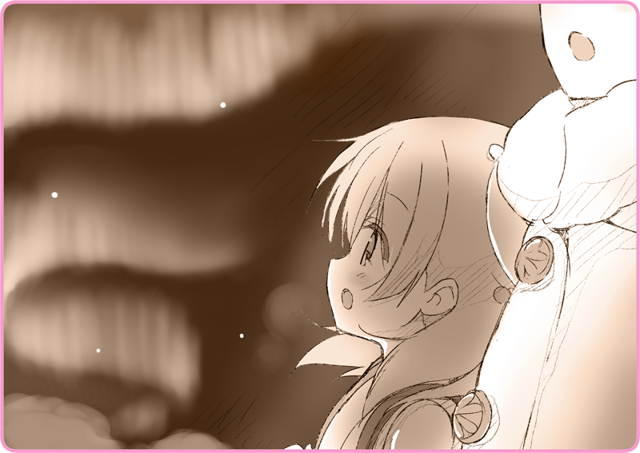

Trong khu rừng rậm rạp.
Người đầu tiên đâm sợ hãi là Haizakura.
Như vậy là quá sớm, bởi từ lúc họ bước vào khu rừng tới giờ còn chưa được mười phút nữa kìa.
“Mang tiếng là Hình nhân mà cậu lại sợ ma ấy hả?”
Đằng sau lưng em chợt có tiếng gì đó lạo xạo.
Em vội chiếu đèn pin – do Hoàng Quân phân phát bị đem đi bán phá giá ngoài chợ – về phía đó.
“... Hình như chỉ là tuyết đổ thôi.”
Thứ ánh sáng lờ mờ chẳng đáng tin cậy từ đèn pin yếu ớt soi bóng khu rừng. Tuyết đổ từ trên cây xuống tạo thành một đụn nhỏ.
Trông em như thể sắp sụm gối tới nơi.
“Tưởng cậu muốn đi cùng tớ cơ mà?”
Em nhanh chóng đứng thẳng lưng lại, cao giọng như tự nhắc nhở chính mình.
Em kéo tay Lilia và tiếp tục tiến bước.
Song chỉ được một lúc, vì em đã lại nép mình bên Lilia tự lúc nào.
“Hì hì… Haizakura này.”
“Mình cùng hát đi.”
“Vì tĩnh lặng thế này nên cậu mới sợ đó. Cùng hát cho có tinh thần nào.”
“La~~~ La la~~~ ♪”
Giọng nữ cao soprano thanh thoát cất lên, như để hòa cùng nhịp bước chân trên tuyết.
“Nào, cả Haizakura nữa.”
Thoát ra cùng hơi thở trắng xóa, tiếng hát của hai cô gái cơ hồ chìm vào trong rừng sâu.
Kỳ lạ thay, hát lên thế này khiến tinh thần của cả hai dâng cao hơn hẳn.
Theo một nghĩa nào đó, có đôi điều đã thông suốt trong tâm trí Lilia.
Tâm trạng ấy khiến cô muốn thỏa sức nắm tay Haizakura mà nhảy múa một điệu.
“Hôm nay ta lại cùng nhau hát thật hăng say nào… ♪“
Haizakura mới nãy còn hoảng loạn tột độ, giờ đây đã có thể thả lỏng bản thân mà say sưa hát theo Lilia.
Cứ thế này, cô cảm thấy như cả hai có thể đi đến bất cứ đâu… thậm chí cả cõi lạc viên.
＊ ＊ ＊
“... Tuyết, ngừng rơi rồi.”
Từ lúc đó tới giờ đã được mấy bài rồi nhỉ?
Dường như bao nhiêu bài học được ở ca đoàn cô đều đã hát hết cả rồi vậy.
Haizakura đã hát theo Lilia suốt, đôi khi lại lặp những đoạn chưa hiểu, đôi khi lại làm gián đoạn bài hát để được chỉ dạy…
Đến khi nhận ra thì hai cô gái đã đi hết khoảng rừng. Họ bước vào một thế giới chìm ngập trong tuyết trắng.
“Cái đèn pin này giờ khỏi cần dùng nữa rồi ha.”
Dù là hàng quân dụng thì nó cũng chẳng chiếu sáng được mấy, có cũng như không.
“Ahahaha, thật đấy. Nếu là ông trăng thì mình khỏi lo hết pin.”
“Đáng trông chờ ghê… a, chà…”
Đột nhiên, cô khuỵu gối.
“T-Tớ không sao… chỉ bị chuột rút nhẹ thôi.”
Có lẽ bởi cô đã quá chú tâm không để chân mình lún sâu vào tuyết.
Bắp chân cô đang căng cứng và gào thét.
“Ừ, chắc vậy… đi nãy giờ rồi còn gì.”
“Nhất trí. Haizakura cũng nạp nhiên liệu đi…”
Họ đưa nhau đến một gò đá gần đó.
Như hồi còn trên phố, hai người chia sẻ chiếc khăn choàng và dựa cả vào hơi ấm của Haizakura.
“Tớ thì thôi. Đằng nào tớ cũng chẳng đói.”
Trong cặp cô có một túi bánh mì lúa mạch, nhưng cô lại chẳng có tâm trạng bỏ nó vào miệng.
“Haizakura, cậu thì phải ăn uống đàng hoàng đó.”
Em cầm chiếc bình chứa nhiên liệu bằng cả hai tay mà uống, chẳng khác nào con người uống sữa nóng cả. Nhân tiện, nhiên liệu bên trong là dầu hướng dương.
“Hì hì, cậu uống trông ngon quá nhỉ.”
“Cảm ơn nhé, Haizakura.”
Coong, họ cụng đầu vào nhau.
Mái tóc màu anh đào của em thật mềm mại, khiến má cô có chút nhồn nhột.
“Hãy ở bên tớ nhé.”
“Nè, tớ hỏi một chuyện được không?”
“Hôm trước cậu có bảo là muốn ngắm pháo hoa nhỉ. Pháo hoa mùa đông…”
“Bây giờ… cậu còn muốn ngắm nữa không?”
“Tại sao thế?”
“Cũng phải, lúc ấy chúng mình đã chia xa rồi nhỉ…”
“Phải ha, một ngày nào đó…”
Liệu sẽ là mười năm, hay hai mươi năm nữa… không, chiến tranh đã diễn ra được ba mươi năm rồi, nên có thể sẽ còn lâu hơn thế nữa.
“Cậu, đang nói gì thế?”
“Bây giờ cậu cũng ngắm được luôn đấy, pháo hoa mùa đông ấy.”
Một vệt sáng lấp lánh căng ngang nền trời.
“Đó… nhìn trời kìa.”

Em ngước đôi mắt tròn xoe màu lưu ly của mình lên trời, buông giọng cảm thán.
Bầu trời đêm lạnh lẽo tỏa sáng không tưởng, vẽ nên mảng màu đẹp mắt liên tục chuyển từ lam sang lục.
“Thật ra, cái này gọi là cực quang đó.”
“Vào những ngày trời lạnh thế này thì cậu có thể bắt gặp nó ở Lebarjak. Cực quang tượng trưng cho may mắn đấy… Người ta nói rằng, khi nó tỏa sáng trên bầu trời năm mới thì năm ấy mùa màng bội thu. Nhưng mà, ai mà đoán được khi nào nó sẽ xuất hiện đúng không? Vậy nên họ mới chọn cách bắn pháo hoa.”
“Ừ, đúng rồi… bài hát hôm trước tớ hát, là nói về cực quang này đấy.”
“Mình đã hát nhiều rồi, còn mỗi
Pháo hoa trời đông là chưa thôi nhỉ…… được rồi, cùng hát chứ?”
Ngước lên ngắm nhìn cực quang, cả hai đồng thời cất tiếng hát.
Thực ra, cổ họng Lilia đã khàn lắm rồi, nhưng cô vẫn cố gắng hòa âm cùng Haizakura.
Cô đang kiệt sức thấy rõ.
Thân người cô từ hông trở xuống nặng như chì, và do cái lạnh mà cô chẳng còn cảm nhận được gì nữa. Ngón tay cô cũng chịu chung tình trạng. Cô thậm chí còn không hề cảm thấy “lạnh”, và cảm tưởng như cả cơ thể này chẳng còn thuộc về mình.
Lông mi của cô dần đóng băng. Ý thức của cô như sắp vuột mất, và giọng nói của Haizakura nghe sao thật lạ tai. Cô vội vã lắc đầu, và bằng cách nào đó cô vẫn có thể hát tiếp được.
Thế rồi, Lilia đã có thể hoàn thành bài hát.
“Tớ xin lỗi, Haizakura…”
“Đến phút cuối cùng… tớ vẫn là kẻ dối trá…”
“Tớ làm sao có thể tới Lobelia nổi chứ…”
“Tớ biết mà, chuyện này… là hoàn toàn bất khả thi…”
Cô đã cố tình nghỉ lại nơi này, đã cố tình hát vang.
“Tớ không chỉ dẫn cậu tới ngắm cực quang thôi đâu… nhìn kìa.”
Có gì đó đang chầm chậm tiến lại.
Quả thật là có những ánh đèn pin đơn lẻ đang soi sáng xung quanh, hẳn là cùng loại với cái Lilia vừa cầm. Trước khi được đem bán tràn lan thì chúng vẫn là đồ quân dụng. Phía sau bóng người là một thứ gì đó hình thù kỳ quặc rất nổi bật. Hơi nước liên tục bốc lên từ chiếc ống khói sau lưng nó.
“Là Hoàng Quân đấy.”

 “Cảm giác sợ thật đấy…”
“Cảm giác sợ thật đấy…”